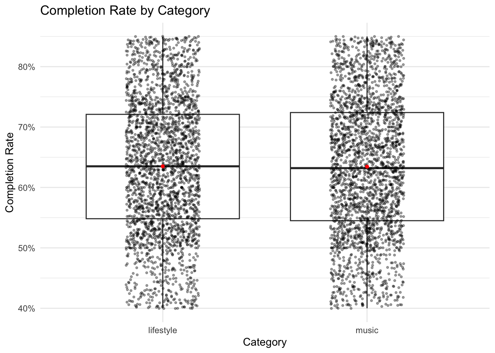
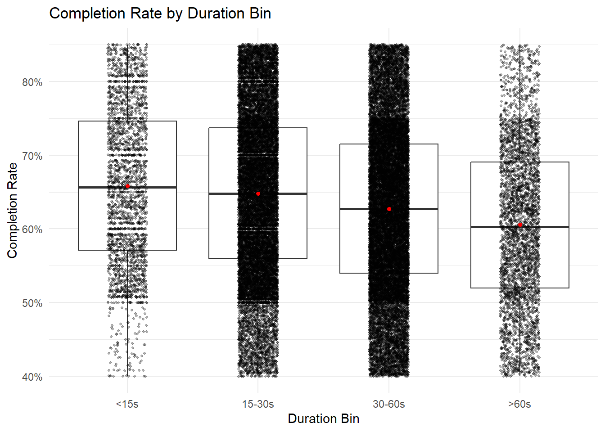
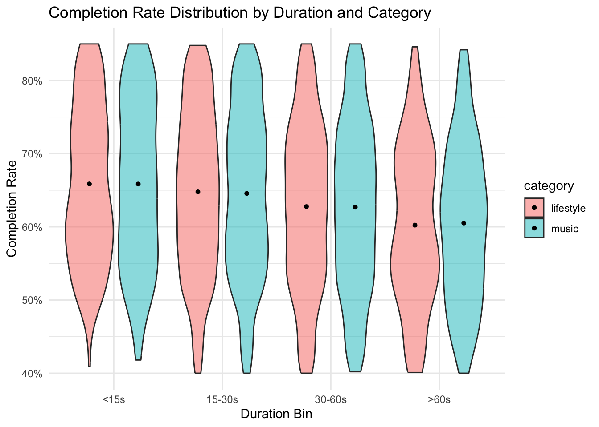
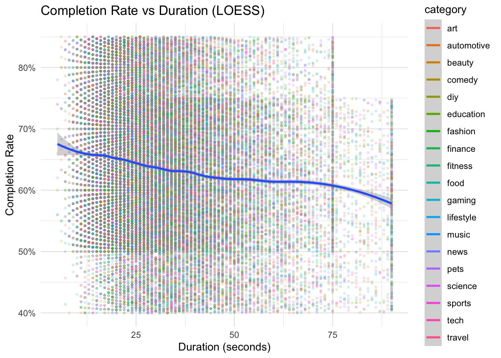
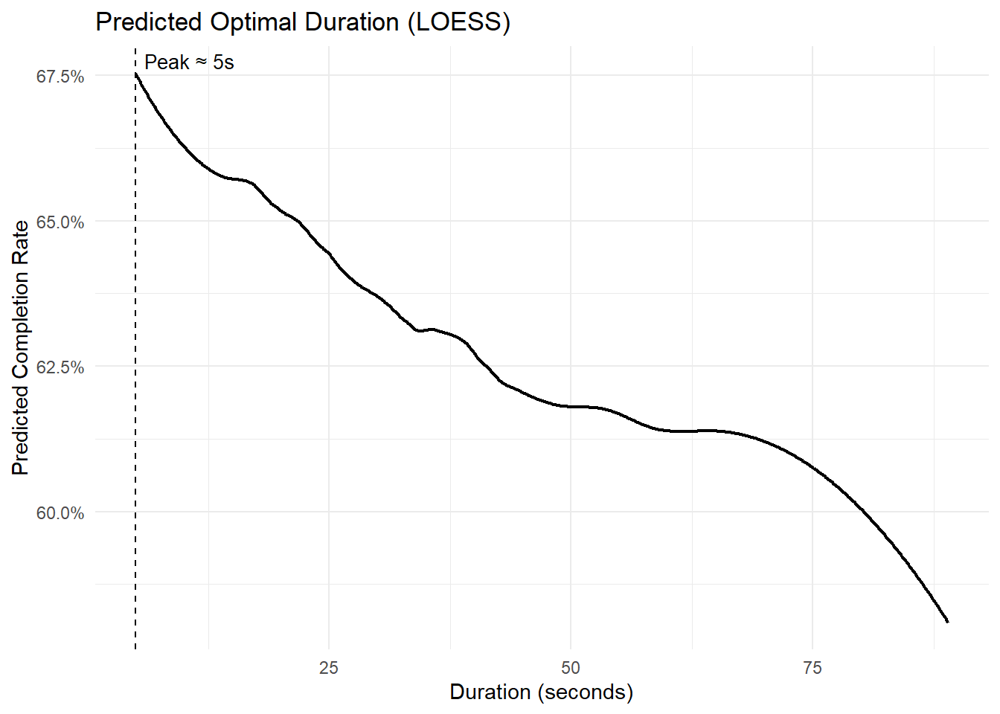
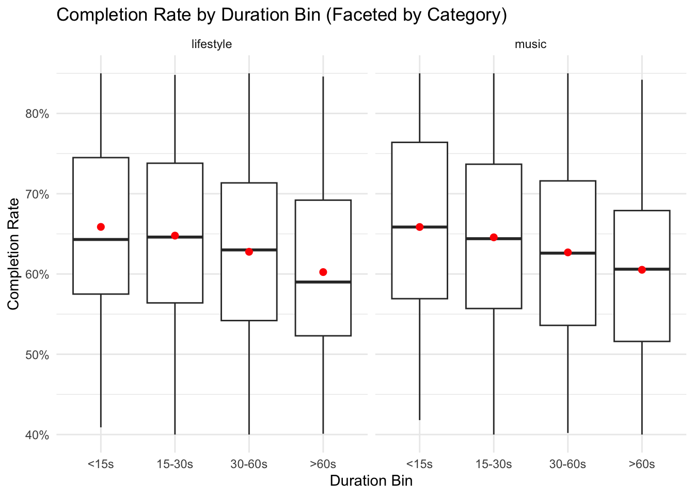

library(tidyverse)## ── Attaching core tidyverse packages ──────────────────────── tidyverse 2.0.0 ──
## ✔ dplyr 1.1.4 ✔ readr 2.1.5
## ✔ forcats 1.0.0 ✔ stringr 1.5.1
## ✔ ggplot2 3.5.2 ✔ tibble 3.3.0
## ✔ lubridate 1.9.4 ✔ tidyr 1.3.1
## ✔ purrr 1.1.0
## ── Conflicts ────────────────────────────────────────── tidyverse_conflicts() ──
## ✖ dplyr::filter() masks stats::filter()
## ✖ dplyr::lag() masks stats::lag()
## ℹ Use the conflicted package (<http://conflicted.r-lib.org/>) to force all conflicts to become errorslibrary(data.table)##
## Attaching package: 'data.table'
##
## The following objects are masked from 'package:lubridate':
##
## hour, isoweek, mday, minute, month, quarter, second, wday, week,
## yday, year
##
## The following objects are masked from 'package:dplyr':
##
## between, first, last
##
## The following object is masked from 'package:purrr':
##
## transposelibrary(ggpubr)
library(scales)##
## Attaching package: 'scales'
##
## The following object is masked from 'package:purrr':
##
## discard
##
## The following object is masked from 'package:readr':
##
## col_factorlibrary(plotly)##
## Attaching package: 'plotly'
##
## The following object is masked from 'package:ggplot2':
##
## last_plot
##
## The following object is masked from 'package:stats':
##
## filter
##
## The following object is masked from 'package:graphics':
##
## layoutlibrary(htmlwidgets)df_raw <- fread("data/youtube_shorts_tiktok_trends_2025.csv", encoding = "UTF-8") %>% as_tibble()
guess_col <- function(patterns, cols) {
for(p in patterns){
idx <- grep(p, cols, ignore.case = TRUE)
if(length(idx) > 0) return(cols[idx[1]])
}
NA_character_
}
cols <- names(df_raw)
col_duration <- guess_col(c("duration_seconds","duration_sec","duration","video_length"), cols)
col_completion <- guess_col(c("completion_rate","completion","completion_pct"), cols)
col_engagement <- guess_col(c("engagement","interaction","engagement_rate","er"), cols)
col_category <- guess_col(c("category","content_type","topic","genre"), cols)
col_platform <- guess_col(c("platform","source","site"), cols)
col_views <- guess_col(c("views","plays","impressions","view_count"), cols)
col_avgwatch <- guess_col(c("watch","avg_watch","watch_time"), cols)
df <- tibble(
duration_sec = as.numeric(df_raw[[col_duration]]),
completion_rate = as.numeric(df_raw[[col_completion]]),
category = tolower(as.character(df_raw[[col_category]])),
platform = if(!is.na(col_platform)) tolower(as.character(df_raw[[col_platform]])) else NA_character_,
engagement = if(!is.na(col_engagement)) as.numeric(df_raw[[col_engagement]]) else NA_real_,
views = if(!is.na(col_views)) as.numeric(df_raw[[col_views]]) else NA_real_,
avg_watch_time_sec = if(!is.na(col_avgwatch)) as.numeric(df_raw[[col_avgwatch]]) else NA_real_
) %>%
mutate(
completion_rate = ifelse(completion_rate > 1, completion_rate / 100, completion_rate)
) %>%
filter(!is.na(duration_sec), !is.na(completion_rate))
df <- df %>%
mutate(
duration_bin = case_when(
duration_sec < 15 ~ "<15s",
duration_sec >= 15 & duration_sec < 30 ~ "15-30s",
duration_sec >= 30 & duration_sec <= 60 ~ "30-60s",
duration_sec > 60 ~ ">60s",
TRUE ~ NA_character_
),
duration_bin = factor(duration_bin, levels = c("<15s","15-30s","30-60s",">60s"))
)
preferred <- c("lifestyle","sport","music")
present_pref <- intersect(preferred, unique(df$category))
if(length(present_pref) == 0){
present_pref <- df %>% count(category, sort = TRUE) %>% slice_head(n = 3) %>% pull(category)
}
ggplot(df %>% filter(category %in% present_pref),
aes(x = category, y = completion_rate)) +
geom_boxplot(outlier.shape = NA) +
geom_jitter(width = 0.18, alpha = 0.35, size = 0.7) +
stat_summary(fun = mean, geom = "point", shape = 20, size = 2, color = "red") +
scale_y_continuous(labels = percent_format()) +
labs(title = "Completion Rate by Category", x = "Category", y = "Completion Rate") +
theme_minimal()
Description:
This boxplot with jittered points compares the completion rates across different content categories (specifically “lifestyle” and “music” in the example). Each box represents the distribution of completion rates for a category, with the red dot indicating the mean completion rate.
Interpretation:
It helps identify which categories tend to have higher or more consistent completion rates. For example, “music” may show a higher median completion rate than “lifestyle.”
ggplot(df %>% filter(!is.na(duration_bin)),
aes(x = duration_bin, y = completion_rate)) +
geom_boxplot(outlier.shape = NA) +
geom_jitter(width = 0.15, alpha = 0.3, size = 0.7) +
stat_summary(fun = mean, geom = "point", shape = 20, size = 2, color = "red") +
scale_y_continuous(labels = percent_format()) +
labs(title = "Completion Rate by Duration Bin", x = "Duration Bin", y = "Completion Rate") +
theme_minimal()
Description:
This boxplot visualizes how completion rates vary across different video duration bins: <15s, 15-30s, 30-60s, and >60s. The red dot marks the mean completion rate for each bin.
Interpretation:
Shows whether shorter videos (e.g., <15s) tend to have higher completion rates compared to longer ones. Often, shorter videos retain viewers better.
ggplot(df %>% filter(category %in% present_pref),
aes(x = duration_bin, y = completion_rate, fill = category)) +
geom_violin(trim = TRUE, alpha = 0.5) +
stat_summary(fun = mean, geom = "point", shape = 20, size = 2, color = "black",
position = position_dodge(width = 0.9)) +
scale_y_continuous(labels = percent_format()) +
labs(title = "Completion Rate Distribution by Duration and Category",
x = "Duration Bin", y = "Completion Rate") +
theme_minimal()
Description:
A violin plot showing the distribution of completion rates across duration bins, separated by category (“lifestyle” and “music”). The black dot represents the mean for each category-bin combination.
Interpretation:
Allows comparison of how completion rates are distributed within each duration bin for different categories. For example, “music” videos may maintain higher completion rates even in longer bins.
ggplot(df,
aes(x = duration_sec, y = completion_rate, color = category)) +
geom_point(alpha = 0.15, size = 0.7) +
geom_smooth(aes(color = NULL), method = "loess", span = 0.3, se = TRUE) +
scale_y_continuous(labels = percent_format()) +
labs(title = "Completion Rate vs Duration (LOESS)", x = "Duration (seconds)", y = "Completion Rate") +
theme_minimal()## `geom_smooth()` using formula = 'y ~ x'
Description:
A scatterplot with a LOESS smoothing curve showing the relationship between video duration (in seconds) and completion rate. Points are colored by category, but the trend line is global.
Interpretation:
Reveals the overall trend: completion rates generally decline as video duration increases. The LOESS curve helps visualize the non-linear relationship.
pred_df <- df %>% select(duration_sec, completion_rate) %>% drop_na()
if(nrow(pred_df) >= 20){
loess_fit <- loess(completion_rate ~ duration_sec, data = pred_df, span = 0.3)
grid_x <- seq(min(pred_df$duration_sec), quantile(pred_df$duration_sec, 0.99), length.out = 1200)
preds <- predict(loess_fit, newdata = data.frame(duration_sec = grid_x))
pred_tbl <- tibble(duration_sec = grid_x, pred_completion = preds) %>% drop_na()
peak_row <- pred_tbl %>% slice_max(pred_completion, n = 1)
ggplot(pred_tbl, aes(x = duration_sec, y = pred_completion)) +
geom_line(size = 0.8) +
geom_vline(xintercept = peak_row$duration_sec, linetype = "dashed") +
annotate("text", x = peak_row$duration_sec, y = max(pred_tbl$pred_completion),
label = paste0("Peak ≈ ", round(peak_row$duration_sec, 1), "s"),
hjust = -0.1, vjust = -0.3, size = 3.6) +
scale_y_continuous(labels = percent_format()) +
labs(title = "Predicted Optimal Duration (LOESS)",
x = "Duration (seconds)", y = "Predicted Completion Rate") +
theme_minimal()
}## Warning: Using `size` aesthetic for lines was deprecated in ggplot2 3.4.0.
## ℹ Please use `linewidth` instead.
## This warning is displayed once every 8 hours.
## Call `lifecycle::last_lifecycle_warnings()` to see where this warning was
## generated.
Description:
A line plot derived from a LOESS model predicting completion rate based on duration. A vertical dashed line marks the duration at which the predicted completion rate peaks.
Interpretation:
Indicates the optimal video duration for maximizing completion rate. In the example, the peak is around 5 seconds, suggesting very short videos are most likely to be completed.
ggplot(df %>% filter(category %in% present_pref, !is.na(duration_bin)),
aes(x = duration_bin, y = completion_rate)) +
geom_boxplot(outlier.shape = NA) +
stat_summary(fun = mean, geom = "point", size = 2, color = "red") +
scale_y_continuous(labels = percent_format()) +
facet_wrap(~ category) +
labs(title = "Completion Rate by Duration Bin (Faceted by Category)",
x = "Duration Bin", y = "Completion Rate") +
theme_minimal()
Description:
A faceted boxplot showing completion rates across duration bins, separately for each category (“lifestyle” and “music”). Red dots indicate bin means.
Interpretation:
Enables category-specific analysis of how completion rates change with duration. For instance, “music” may show less decline in longer bins compared to “lifestyle.”